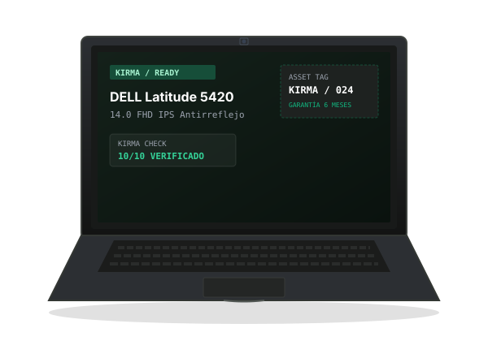

EQUIPOS CORPORATIVOS. LISTOS PARA TRABAJAR.
Tecnología que renace. Equipos corporativos remanufacturados, soporte técnico y acompañamiento real.

¿Qué significa remanufacturado?
Un equipo corporativo remanufacturado es un computador que tuvo un uso anterior en entornos empresariales y que posteriormente pasa por procesos de revisión, preparación y puesta nuevamente en funcionamiento, de acuerdo con las condiciones informadas para cada unidad.
Nuevo
Equipo sin ningún uso previo. Sale directamente de la línea de ensamblaje del fabricante.
- ✓ Cero horas de funcionamiento previo.
- ✗ Precio significativamente más elevado.
- ✗ Mayor depreciación en el primer año.
Usado
Equipo que ha tenido un propietario anterior y se vende en el estado en que se encuentre, habitualmente sin revisión técnica estandarizada.
- ✓ Precio más bajo.
- ✗ Sin garantía legal ni soporte postventa.
- ✗ Incertidumbre sobre el estado real de sus componentes.
Remanufacturado
Equipo corporativo que tuvo uso previo y que ha sido inspeccionado, preparado y certificado punto por punto para una nueva etapa de trabajo productivo.
- ✓ 6 meses de garantía por escrito en Colombia.
- ✓ Kirma Check de 10 puntos de laboratorio.
- ✓ Acompañamiento técnico y condición física informada.
¿Por qué equipos corporativos?
A diferencia de los portátiles comerciales convencionales de consumo masivo, los equipos de líneas empresariales (Dell Latitude, Lenovo ThinkPad, HP EliteBook) están diseñados bajo estándares rigurosos de ingeniería para resistir jornadas intensivas de trabajo durante años.
Chasis y Materiales Superiores
Estructuras internas reforzadas con aleaciones de magnesio, fibra de carbono o aluminio unibody. Bisagras metálicas probadas para miles de ciclos de apertura continua.
Facilidad de Servicio y Expansión
Concebidos para que los departamentos de TI puedan reemplazar fácilmente módulos de memoria RAM, unidades de disco SSD y baterías, alargando su vida útil.
Puertos Físicos sin Adaptadores
Disponibilidad nativa de puertos Thunderbolt, USB-A tradicionales, salidas HDMI y conexión de red Ethernet Gigabit RJ-45 sin necesidad de dongles o adaptadores frágiles.
Teclados y Pantallas Profesionales
Teclados ergonómicos resistentes a salpicaduras menores diseñados para digitación prolongada. Paneles IPS antirreflejo para evitar la fatiga visual en jornadas de 8+ horas.
Sistemas Térmicos Robustos
Disipadores de calor de cobre y ventiladores diseñados para trabajar de forma silenciosa y mantener el procesador en rangos térmicos óptimos sin estrangulamiento térmico.
Prestaciones Altas a Menor Precio
Acceso a equipos que originalmente tenían precios directivos corporativos, ahora revisados y listos para trabajar por una fracción de su valor inicial.
Equipos Corporativos Disponibles
Cada unidad mostrada cuenta con número de asset tag individual, especificaciones técnicas verificadas en laboratorio y estado estético honesto.
¿Para qué necesitas tu computador?
No necesitas ser un experto en componentes técnicos. Selecciona tu perfil o actividad principal y nuestro recomendador te mostrará únicamente equipos con la potencia y arquitectura validada para esa labor.
Cómo trabajamos en KIRMA
No inventamos procesos. Cada equipo que ofrecemos pasa por 5 etapas concretas de revisión y preparación antes de llegar a tus manos.
Selección
Identificamos lotes de equipos corporativos provenientes de renovaciones tecnológicas empresariales con chasis y componentes originales.
Revisión
Se ejecuta el protocolo Kirma Check de 10 puntos: pruebas de panel, placa, puertos, memoria, almacenamiento y retención eléctrica.
Preparación
Limpieza interna y externa, instalación limpia del sistema operativo Windows Pro con controladores oficiales y optimización de BIOS.
Entrega
El equipo se embala con protección industrial anti-impacto junto con su cargador probado y ficha técnica firmada para entrega o despacho.
Acompañamiento
KIRMA continúa disponible después de la compra para resolver dudas, brindar soporte de configuración y respaldar tu garantía de 6 meses.
¿Estás en otra ciudad de Colombia?
También puedes comprar desde cualquier ciudad o municipio del país. Coordinamos el despacho directo con empresas transportadoras reconocidas (Servientrega, Coordinadora, Inter Rapidísimo).
- • Tiempos de entrega: Dependen de la cobertura y trayecto del servicio de transporte (habitualmente de 2 a 5 días hábiles según el destino).
- • Costos de envío: Se informan con total claridad de forma previa al despacho según la ciudad.
- • Acompañamiento remoto: Te asistimos por WhatsApp o soporte remoto una vez recibas la unidad para guiarte en tu configuración inicial.
Tu compra no termina cuando recibes el equipo.
Sabemos que la tecnología requiere acompañamiento humano. KIRMA ofrece canales directos para resolver dudas técnicas, orientación inicial y asistencia remota o presencial.
Antes de realizar una restauración, formateo o reinstalación de Windows, asegúrate de tener una copia de seguridad (backup) de tus archivos importantes en un disco externo o la nube. Estos procedimientos técnicos pueden provocar pérdida irreversible de información. KIRMA no asume responsabilidad por la pérdida de datos personales durante procedimientos solicitados por el usuario.
Flujo de Asistencia Técnica Remota
Contacta por WhatsApp
Escríbenos describiendo la situación y el serial de tu equipo corporativo.
Evaluación Inicial
El técnico determina si la novedad es de configuración o software y puede solucionarse a distancia.
Herramienta Oficial
Si es necesario, te solicitaremos abrir una herramienta segura (AnyDesk o TeamViewer oficial).
Sesión Supervisada
Permaneces frente a la pantalla viendo todo lo que hace el técnico. Al terminar, se cierra el acceso.
AnyDesk Oficial
Herramienta ligera para diagnóstico y configuración en vivo. Descargar únicamente desde el dominio oficial del desarrollador.
Descargar AnyDesk Oficial ↗TeamViewer QuickSupport
Módulo de soporte remoto directo que no requiere instalación permanente. Descargar desde la página oficial.
Descargar TeamViewer Oficial ↗Garantía KIRMA: 6 Meses por Escrito
Los equipos corporativos remanufacturados comercializados por KIRMA cuentan con 6 meses de garantía a partir de la entrega, atendiendo a las condiciones informadas y a la legislación colombiana (Ley 1480 de 2011).
La garantía atiende defectos de calidad, idoneidad o fallas en el funcionamiento técnico de la unidad que no hayan sido informadas previamente y que no provengan de un mal uso o causa atribuible al cliente.
Cobertura y Condiciones Informadas
Si un equipo tiene desgastes estéticos leves, rayones superficiales o un porcentaje de salud de batería determinado, dicha condición se informa con total claridad en la ficha antes de la compra y no constituye una falla oculta.
Batería y cargador: No se excluyen automáticamente. Se evalúa cada caso con base en su causa real. El desgaste progresivo normal derivado del uso no equivale a una falla intempestiva cubierta.
Exclusiones Causales Basadas en la Ley
Conforme a la legislación de protección al consumidor, quedan excluidos aquellos daños demostrables imputables a:
- Golpes, caídas, aplastamiento o rotura física de pantalla/chasis.
- Ingreso de líquidos o daño por sulfatación.
- Sobretensiones eléctricas externas no atribuibles al cargador suministrado.
- Manipulación interna no autorizada que guarde relación causal con el daño.
Falla Repetida y Suspensión del Plazo
Suspensión del término: Mientras el equipo permanezca en nuestro laboratorio técnico para diagnóstico o reparación y el consumidor esté privado de su uso, el término de garantía se suspende legalmente, sumándose esos días al vencimiento final.
Falla repetida: Si el mismo defecto persiste tras la intervención técnica, se procederá conforme a las alternativas que contempla el Estatuto del Consumidor (nueva reparación, sustitución o devolución).
Proceso de Solicitud (Paso a Paso 01-06)
- 01 Contacto: Notifícanos por WhatsApp con tu factura o número de equipo.
- 02 Descripción: Explica la anomalía detectada.
- 03 Registro: KIRMA radica el caso con número único.
- 04 Recepción: Se recibe la unidad en laboratorio o se coordina envío.
- 05 Diagnóstico: Evaluación técnica y reporte de causa raíz.
- 06 Solución: Reparación de componente o solución aplicable según la ley.
Documentación Interna y Trazabilidad KIRMA
Cada portátil cuenta con una hoja de vida técnica. Explora el sistema documental con el que registramos el ingreso, los 10 puntos de comprobación de Kirma Check y la gestión de garantías.
Preguntas Frecuentes
Resolvemos tus dudas con total honestidad. Si tienes una consulta particular, nuestro canal de WhatsApp está siempre disponible.
Tecnología que renace.
En un mundo acostumbrado al consumo desechable, creemos en el valor de los equipos corporativos de alta ingeniería. Computadores diseñados originalmente para empresas que, tras una revisión técnica rigurosa y transparente, tienen todo el potencial para acompañar a un estudiante universitario, a un profesional independiente o a una pequeña empresa en su trabajo diario.
No somos una startup con promesas futuristas vacías ni una tienda genérica de informática. Somos un equipo técnico que cree en la información honesta: primero te mostramos el equipo, te decimos en qué condición física real está y qué pruebas ha superado; después, decides tú.
Hablemos con claridad
Estamos disponibles para responder tus preguntas, verificar disponibilidad de inventario o brindarte soporte.
Atención Directa
Comunícate por nuestros canales oficiales para recibir asesoría sobre equipos disponibles o hacer seguimiento a tu pedido.
Consulta Rápida por WhatsApp
Selecciona el motivo de tu consulta para iniciar una conversación directa con un mensaje claro y contextualizado: